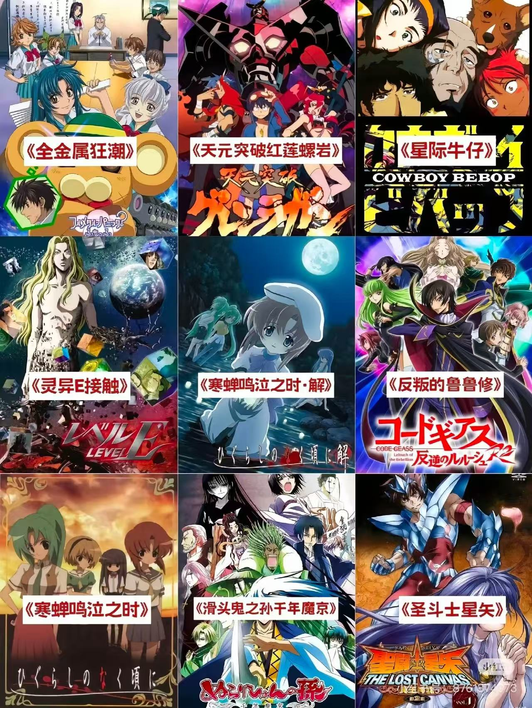
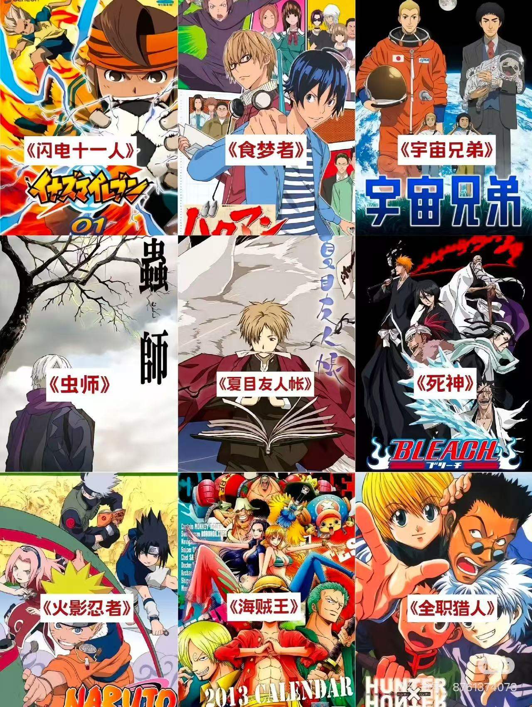

Anime spans a wide range of genres, each offering its own unique stories and experiences. Whether you're in the mood for action, love, or mystery, there's always something for everyone.
Shonen – Action-packed series aimed at teen boys
Shojo – Romantic and emotional stories for teen girls
Seinen – Mature and complex narratives for adults
Isekai – "Other world" adventures and fantasy
Slice of Life – Everyday life with warmth and simplicity


Shonen
Often features intense battles, rivalry, and personal growth.
Shojo
Focuses on love, friendship, and emotions from a young girl's perspective.
Isekai
Characters are transported into alternate worlds full of magic and danger.